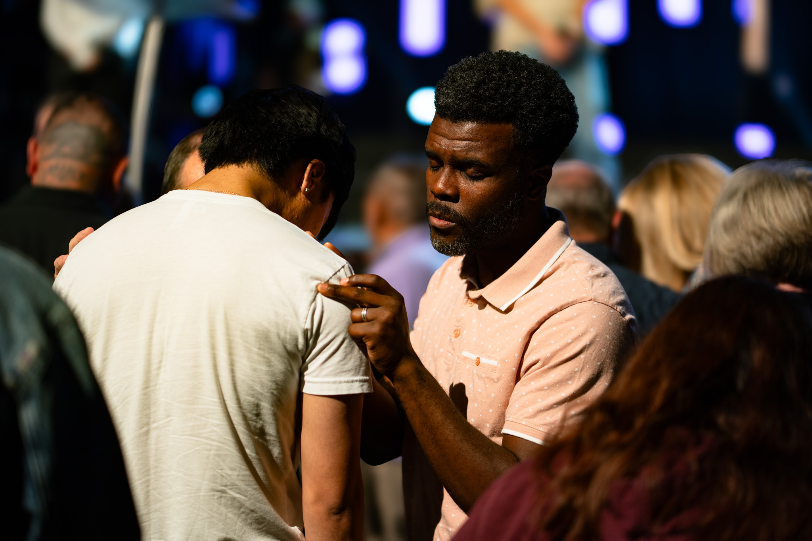
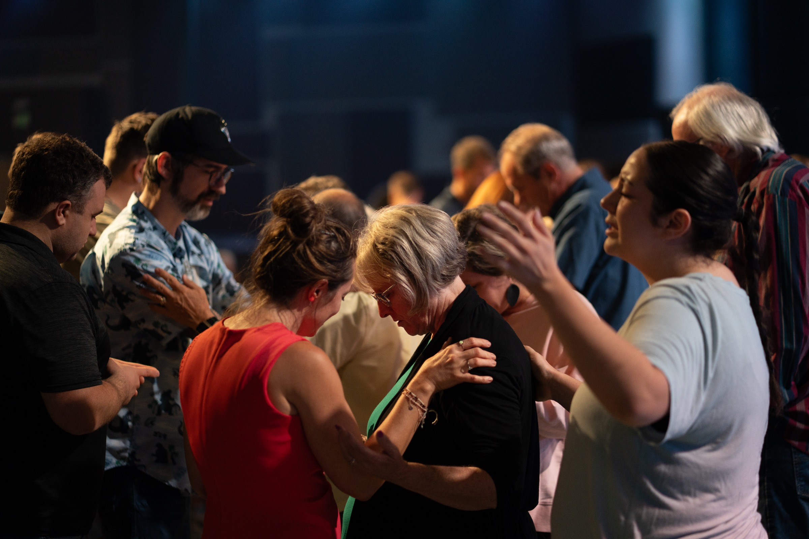

Whatever you're carrying, you don't have to carry it alone. Tell us and we'll pray for you, or come pray with us.
Anytime
Your request goes to our staff and prayer team.
Submit a requestSundays
After every service our prayer team stays up front to pray with you. Look for the lanyards.
Wednesdays · 6:30 PM
Worship, prayer and testimonies in the middle of the week.
Plan to comeWe are a praying church! We believe in the power of prayer and bringing our needs before God through confession, praise, and thanksgiving. We have seen answered prayer, divine intervention, and miracles because of our dedication to spending time talking to God. Won’t you join us and see what the Lord can do?
In an emergency, call 911. If you're in crisis, call or text 988 any time.
Your request is in. Our staff and prayer team will lift it up this week.
Trouble with the form? Open it full screen

Wednesday Night Prayer is a time for our church family to gather midweek, seek God’s presence, and lift up the needs of our community, church, and world. It’s a space to be refreshed, encouraged, and united as we pray together and believe for God to move in powerful ways. Whether you’re new to prayer or have been walking with Jesus for years, you are welcome to join us as we call on Jesus' name.
“There will always be a prayer meeting in this place.”
Pastor Michael Petillo, Pass the Salt and Keep It Coming
Prayer is communication with God, either in thought or in spoken or written words. Just as our relationships with friends and family grow and deepen as we spend time together, time interacting with God deepens our relationship with Him.
Prayer gives us direct access to God’s listening ear, as well as His love, strength, wisdom, and comfort. It’s a way to express our love, confess our sins, and bring our requests to Him.
Prayer also is a time for hearing from God. As we pray, the Holy Spirit guides us in decisions, comforts our sorrows, and lavishes His love on us.
Prayer deepens our relationship with Him and strengthens our faith.
“Come near to God and he will come near to you.”James 4:8We pray to receive wisdom and direction for life’s decisions.
“If any of you lacks wisdom, you should ask God, who gives generously to all without finding fault.”James 1:5Prayer allows us to lift up the needs of people and communities before God.
“I urge, then, first of all, that petitions, prayers, intercession and thanksgiving be made for all people.”1 Timothy 2:1Read what God has done in the lives of people at Springs.